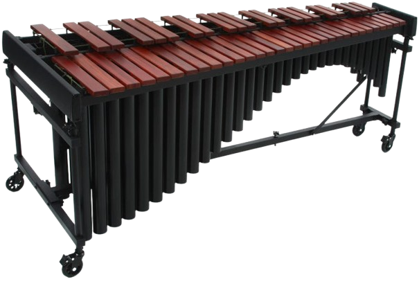
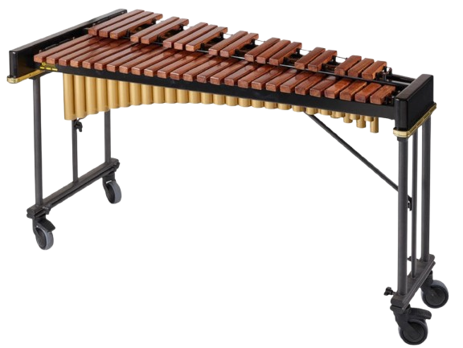

I teach students attending primary and high school students percussion and piano.
Instruments taught are:
Marimba
Xylophone
Snare Drum
Piano
Any auxiliary percussion required by your school (please provide your own instruments)
Note: I do not teach drums. Please do not enquire about drum kit teaching.
I have been playing percussion since 2018 and completed AMEB Grade 7 at High Distinction in 2023.
I scored exceptionally well in Marimba and Xylophone for HSC Music 1, earning a band 6, with my strength in performance skills.
I was a dedicated pianist from 2013-2021 - playing occassionally since then - completing AMEB Grade 7.
Musical background:
I was a 2023 Nominee to perform in the Year 12 Music showcase, Encore.
I was selected to be part of the Sydney Youth Orchestra (SYO) in 2024, playing an exceptional piece Symphony No. 7 composed by Mahler.
Marimba
Typical size of a 4.3 octave marimba is 185-225cm long, 80-100cm wide, 80-115cm tall
Typically played with soft rubber, yarn-wrapped or cord-wrapped mallets

Xylophone
Typical size is 120-145cm long, 55-80cm wide, 83-95cm tall
Typically played with hard rubber, plastic or wooden mallets

Snare Drum
Typical size of the snare drum (excluding the stand) is 14-inch diameter and 12.7-16.5cm in depth. Height on the stand varies on the player's comfort level.
Typically played with wooden sticks
Unlike drumkit snare drums, which are designed to be versatile, solo snare drums are high-pitched to focus more on articulation and projection